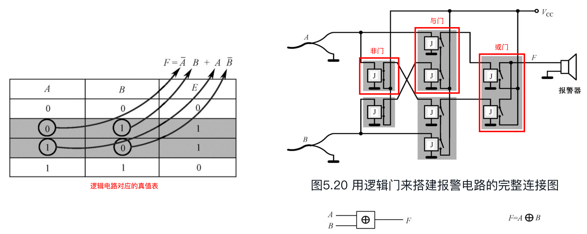
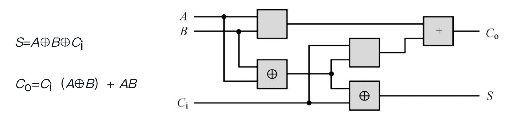

《穿越计算机的迷雾（第二版）》读书笔记
李忠老师的另一大作。本书以“电”为始，到加法器，再到晶体管，逐步从历史发展的角度介绍了计算机的基本演化方式，是一本不错的科普书籍。
第 1 章 - 了解计算机，要从电开始
- 无论固体还是液体，内部如果有能够自由移动的电子或者离子，那么他就可以导电。绝缘体的特点是分子中正负电荷束缚得很紧，可以自由移动的带电粒子极少，其电阻率很大；导体则相反。在没有接入电源的情况下自由电子在导线中杂乱无章的运动，这种情况下不会在导线中形成电流。若是导线接入了电源，导线中的自由电子就会在恒定电场的作用下定向移动。自由电子的定向移动就形成了电流。自由电子定向移动的速度很小（7.5* 10-5 m/s），而闭合用电器的开关用电器几乎是马上就能工作，这是因为电场传递速度快的原因。电磁场在真空中能够以光速传播，闭合开关时，电路中导线的各个位置几乎同时建立了恒定电场，在恒定电场的作用下，导线中的自由电子同时开始向前运动，所以开关闭合后用电器能够马上工作。电压是一种吸引力，是由于失去电子和希望重新得到电子而引起的。
- 能量守恒定律（Law of conservation of energy）是自然界普遍的基本定律之一。一般表述为：能量既不会凭空产生，也不会凭空消失，它只会从一种形式转化为另一种形式，或者从一个物体转移到其它物体，而能量的总量保持不变。也可以表述为：一个系统的总能量的改变只能等于传入或者传出该系统的能量的多少。总能量为系统的机械能、内能（热能）及除机械能和内能以外的任何形式能量的总和。如果一个系统处于孤立环境，即不可能有能量或质量传入或传出系统。对于此情形，能量守恒定律表述为：“孤立系统的总能量保持不变。
第 2 章 - 用电来表示数
（主要介绍二进制，内容略）
第 3 章 - 怎样才能让机器做加法
- 半加器：仅仅是把来自被加数和加数的两个比特加起来，产生一个“和”以及一个进位，并不考虑从其他列来的进位。全加器：与半加器相反，实现了二进制加法中每一列的加法过程。
由 3 个全加器组成的 3 比特加法机（结果是 4 比特）
- A、B：来自被加数和加数的一个比特，它们正好在同一列上；
- Ci：来自右边一列的进位；
- Co：本列产生的进位；
- S：本列的“和”。
第 4 章 - 电子计算机发明的前夜
- 交流电：
导体在磁场中的运动轨迹及其随时间变化的电压值
- 方向和大小都随时间不断变化。导体在磁场中的运动方向（圆周运动）决定了电流的极性和大小；
- 当提高所要传输的电压时，可以降低电能在供电线路上的损耗；
- 变压器的原理：一个铁框，用绝缘导线在它的两边分别绕上线圈。左边的线圈称为初级线圈，右边的称为次级线圈；初级线圈和次级线圈的匝数比例决定了交流电的电压传递之比。如果初级线圈有 1000 匝而次级线圈有 5000 匝，那么在次级就能获得比初级高 5 倍的电压，这相当于升压；反之，则为降压；
- 在我国，政府对电力供应的各项指标有统一的规定，其中要求交流电的频率必须是 50Hz。
- 自感：当导体中的电流发生变化时，它周围的磁场就随着变化，并由此产生磁通量的变化，因而在导体中产生感应电动势，这个电动势总是阻碍导体中原来电流的变化，此电动势即自感电动势。
第 5 章 - 从逻辑学到逻辑电路
- 在布尔代数里，X 代表一个命题，X = 0 表示命题为假；X = 1 表示命题为真。香农发现，如果用 X 代表一个由继电器和普通开关组成的电路，那么，X = 0 就表示开关合上；X = 1 表示开关打开。
命题演算和现实的开关组合具有完美的一致性
- 一个从逻辑代数到逻辑电路的例子：

- J 为继电器，通电后产生磁吸力；
- 上述电路整体产生了一个新的逻辑电路类型 - 异或门。
第 6 章 - 加法机的诞生
- 基于异或门实现的全加器：

第 7 章 - 会变魔术的触发器
- 振荡器：
- 将非门的输出作为输入，它所产生的方波总是被称为“脉冲”，每秒能产生多少个这样的脉冲，称为这种振荡器的频率；
- 最早的目的是为了向天空中扬撒电磁波（使用高速变化的电流）；
- 在电子计算机中，通常用于自动提供触发信号（比如“上升沿”）。
- 电子三极管：
- 具有单向导电性。两极之间在具有电压且真空的环境下，加热阴极，可以向阳极发送电子；
- 通过改变栅极上电压的大小和极性，可以改变阳极上电流的强弱，甚至切断它（具有放大效果）；
- 晶体三极管具有电流放大作用，其实质是三极管能以基极电流微小的变化量来控制集电极电流较大的变化量。
- 触发器（Flip Flop）：
- 两个开关 S（Set）和 R（Reset），闭合一个断开另一个，总是会得到两个相反的输出 Q 和 Q’。Q 的输出和 S 的输入总是一致的。一直以来我们把 Q 作为触发器的输出；
- 普通的电路，以及常规的逻辑门都有一个共性，那就是输出直接依赖于输入，当输入消失的时候，输出也跟着不存在了。触发器不同，当它触发的时候，输出会发生变化。但是，当输入撤销之后，输出依然能够维持。触发器具有记忆能力。
第 8 章 - 学生时代的走马灯
- D（Data）触发器：

- 在 S-R 触发器的基础上，新增了一个“非门”和两个“与门”；同时新增一个控制端输入 CP；
- 状态控制：
- CP = 0：触发器不被外面的数据干扰，继续保持原先保存的那个比特（S、R 输出均为 0）；
- CP = 1：为触发器设置新的比特状态（根据输入 D 设置）。
- “上升沿触发”的 D 触发器：
- 可以由两个 D 触发器首尾相连组成。相当于两步走：
- CP = 0 时比特先暂存到第一个触发器；
- CP = 1 时第一个触发器保存的输出再传递到第二个触发器，进而转为最终输出。
- 只在 CP 脉冲的上升边沿触发；
- 走马灯电路：
- 也被称为“循环移位寄存器”；
- 可用于实现串行的数据发送和接收：移位寄存器的每一个触发器分别接受并行数据的对应比特，然后开始循环移位，将每一个比特按顺序送出。在接收端，另一个循环移位寄存器将接收到的比特按顺序往后移动。当移动到最后一个触发器时，并行电路同时从每一个触发器那里取走比特，形成并行数据；
- 采用“上升沿触发”的 D 触发器构建，使用振荡器产生往复信号。
第 9 章 - 计算机时代的开路先锋
- 当开关电路的理论建立起来之后，第一个受益的就是电话交换。当一部电话拨出号码之后，交换电路就会产生一个输出，使某个继电器吸合，从而将两部电话接通；当用户煲完了电话粥，挂机之后，继电器断开，让出干线供其他用户使用。本质上，我们现在的电话交换机也是这么工作的。
- 晶体管：
- 本征半导体：将半导体材料硅提纯并拉为单晶后形成的，一种不存在任何掺杂物质的纯半导体；
- 晶体管可代替电子管来制作各种门电路；
- 但凡晶体，组成它们的原子排列得很规则，它们之间的关系也很稳固，这都是电子的功劳；
- 一块纯净本征的半导体（比如硅），在一边掺上硼，另一边掺上磷，然后分别引出两根导线。这样，这块半导体的导电性能可以获得很大改善，而且像电子二极管一样，具有单向导电性；
- 如果在半导体中掺入砷、镓等原子，制作出来的晶体二极管就会发光，称为发光二极管（LED）；
- 晶体三极管：具有放大作用（下图中，电流 I1 控制着电流 I2 的大小）。
晶体三极管
- 由“乒乓触发器”组成的二进制计数器：
- 初始状态，将每一个触发器的 Q 输出清零；
- CP 上升沿触发，每次对调两个输出端的状态（由于“乒乓触发器”依次重复模拟上升沿和下降沿，因此可对应于二进制计算的进位过程）。
第 10 章 - 用机器做一连串的加法
- 寄存器：由多个 CP 上升沿触发器组成，每个触发器存储一位二进制数字。
第 11 章 - 全自动加法计算机
- RAM 存储器：
- 比特存储单元由“上升沿 D 触发器”构建；
- “地址译码器”根据 A0、A1 … 的输入来选择要使用的存储器行；
- 输入 R、W 控制存储器的操作类型。
- 约翰·冯·诺依曼在《计算机与人脑》这本书里写道：“一条指令，在物理意义上和一个数是相同的”。他认为，存储器里不但要有这些纯粹的数字，还应当有一些指示如何加工这些数字的指令。
- 半自动加法器：
- 通过给前置电路增加“振荡器”可以将其改造为全自动加法器。同时，还需要新增一个“停机”指令的输入端，来在计算完成时及时断开振荡器的输入信号；
- 组成部件：
- RR：循环移位寄存器，用于映射计算步骤；
- 译码器：根据 RR 的输入调整不同的信号输出，以操作不同的计算部件；
- AC：计数器，用于提供存储器的访问地址；
- AR：地址寄存器；
- DR：数据存储器；
- IR：指令寄存器；
- EC：译码电路，用于根据 IR 的内容决定 “I 相加” 和 “I 装载” 的输入信号；
- GA、GB：传输门。
- RA：数据寄存器，保存第一个要加的数字；
- TR：临时寄存器，临时保存计算结果。
第 12 章 - 现代的通用计算机
（主要介绍了汇编语言在形式上的基本结构）
- 字长表示一台计算机在一次操作中可以处理的二进制比特数。
第 13 章 - 集成电路时代
- 所有的电容器都有一个特点，那就是把它接到电源上时，在电源的作用下，一个金属板上的电子会被拉到另一个金属板上，从而，当电源撤走之后，这两块金属板会保持着一块电子多余而另一块电子缺乏的状态，以至于在它们之间存在电压。可以利用电容器充放电的特点来保存 1 个二进制比特。充了电的电容器相当于保存了 “1”，而没有充电的则是 “0”。这样，用一只具有开关效能的新型晶体三极管和一只电容就可以存储一个比特。由于电容会慢慢自然放电，因此这种存储器（DRAM）必须以极快的速度定时重写，称为“刷新”。
- 可以用只读存储器（ROM）代替传统的逻辑门电路：把所有不同的输入看成存储器地址，同时把它们对应的输出固化在存储单元里。这样的好处在于 ROM 中的输入输出映射可以随着硬件架构的改变而灵活变化。
第 14 章 - 核心与外部设备
- 从模拟信号到数字信号的转换可以通过“采样”完成。采样频率越高，精度越好。
- 24 位真彩色：RGB 每个像素对应 3 个字节，共 24 位。
第 15 章 - 数字化生存
（略）
文章评论（Utterances）